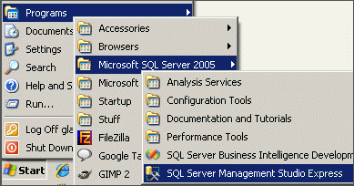
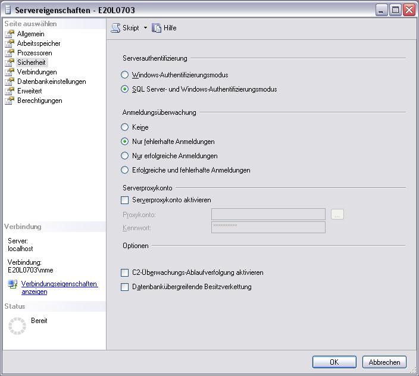
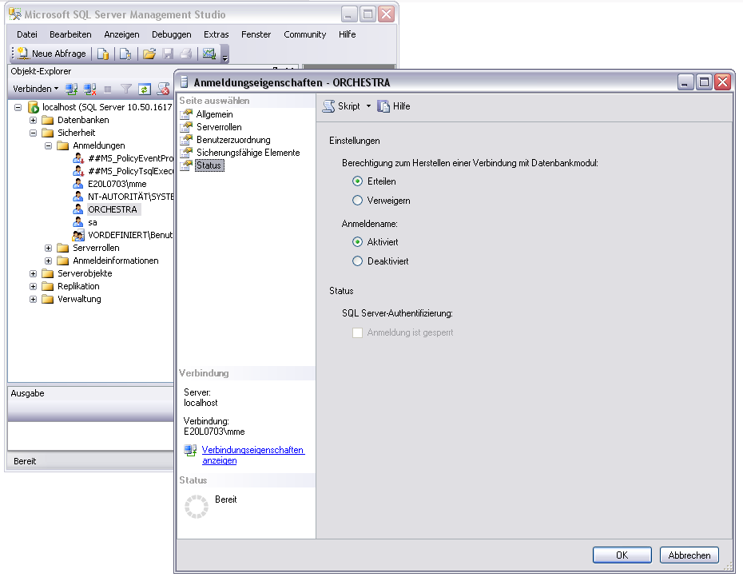

MSSQL

Topic content
Configuration adjustments
The needed SQL Scripts for the Orchestra Installation can be found in ...\Database\mssqlserver
1.Start Microsoft SQL Server Management Studio.
2.Log in as user SA.
3.Open script 01_syscreate_schema_orchersta.sql.
4.Change the paths to your local system:
/****** Object: Database [ORCHESTRA] ******/ CREATE DATABASE [ORCHESTRA] ON PRIMARY ( NAME = N'ORCHESTRA' FILENAME = N'C:\Programme\Microsoft SQL Server\MSSQL10_50.SQLEXPRESS\MSSQL\DATA\ORCHESTRA.mdf' , SIZE = 51200KB , MAXSIZE = UNLIMITED, FILEGROWTH = 1024KB ) LOG ON ( NAME = N'ORCHESTRA_log', FILENAME = N'C:\Programme\Microsoft SQL Server\MSSQL10_50.SQLEXPRESS\MSSQL\DATA\ORCHESTRA_log.ldf' , SIZE = 10240KB , MAXSIZE = 2048GB , FILEGROWTH = 10%) COLLATE Latin1_General_CI_AS
|
5. Run the script.
6. Close the database connection.
7. Open a new database connection and log in as User ORCHESTRA (password: ORCHESTRA).
8. Open and run the scripts 02 -XX.
|
If the log in as user ORCHESTRA does not work (although the corresponding user exits), this may be due to the installation of MS SQL Server. The Server must be set up that logging in via SQL authentication is allowed. Follow these steps to do so: |
Configure Microsoft SQL Server for Mixed Mode Authentication (2005/2008/2012)
SQL Server uses two phase security authentication scheme. The user is first authenticated to the server. Once the user is “in” the server, access can be granted to the individual databases. SQL server stores all login information with in the master database
There are two authentication methods in use.
•Windows authentication mode
•Mixed mode
To enable Mixed Mode Authentication, proceed as follows:
1.Open Microsoft SQL Server Management Studio
2.Click Start, Programs, Microsoft SQL Server 2005 and select SQL Server Management Studio Express or SQL Server Management Studio, depending on your version of SQL Server.

3.Enter the requested information (Server Type, Server Name, Authentication) and connect
4.Right click the server name and select Properties
5.Select Security
6.Under Server authentication select SQL Server and Windows Authentication Mode

7.Click OK
8.Right click the server name and select Restart. Wait a few moments for the service to restart before proceeding.
Notice: In Case that the Login with your SQL user does not work, you have to check the users privileges. The user must have been granted the right to connect to the database engine. See the following figure:
